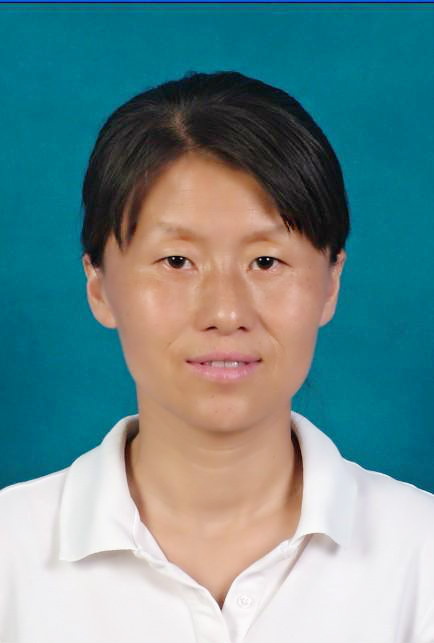

|  | Jing LiColleage of Computer Science and Technology,Nanjing University of Aeronautics and Astronautics No.29, Jiangjun Avenue, Jiangning District, Nanjing, China, 211106 Email: jingli@nuaa.edu.cn |
Short Biography
I recieved the B.S.and M.S. degree in School of Computer Science & Engineering from Chang Chun university of technology in 1998 and 2001,respectively, and the Ph.D. in Computer Science and Technology from Nanjing University, China in 2004. Currently, she is a Associate Professor of Nanjing University of Aeronautics and Astronautics, China.
Research Interests
My Current research interess mainly include image processing and data mining. Soving the problems in cosaliency and cosegmentation for multiple images and video is our future research direction.
Team
【Jing Li（Teacher)】 【Xiu-Zhong Li(2006)】 【Min Zhang(2008)】 【Hai-Lin Hu(2009)】 【Zhong-Lu Xu(2010)】 【Hai-Yang Bai(2011)】 【Pei-Yun Zhou(2012)】 【Ning-Min Shen(2013)】 【Hua-Feng Lin(2014)】 【Da-Chuang Liang(2014)】 【Dong-Ming Li(2015)】
Publications
-
李静, 陈兆乾, 陈世福. EM-GMPF : 一种基于 EM 的混合高斯粒子滤波器算法. 计 算 机 研 究 与 发 展. 2005, 42(7):1210-1216
-
李静, 陈兆乾, 秦小麟. 基于粒子滤波算法的非刚性目标实时跟踪. 南 京 航 空 航 天 大 学 学 报. 2006, 38(6):775-779
-
李静, 秦小麟，李 芳，朱 伟，钱鲁泓. 基于区域粗定位与 Chan-Vese 主动轮廓模型的MAG 焊视觉图像熔池边缘提取. 机 械 工 程 学 报. 2011, 47(12):74-78
-
李静,李 芳，朱 伟，廖剑雄，钱鲁泓. 基于被动光的 MAG 管道打底焊焊缝边缘提取方法. 焊 接 学 报. 2011, 32(10):69-72
-
李静,李 芳，秦小麟，朱 伟，张敏，钱鲁泓. 结合 Sobel 算子与 Snake 模型的焊缝图像边缘提取. 小 型 微 型 计 算 机 系 统. 2011, 32(12):2491-2494
-
李静,沈宁敏，白海洋，周培云. 基于时间自动机的嵌入式系统 AADL 模型可调度性验证. 东 南 大 学 学 报 ( 自 然 科 学 版 ). 2015, 45(6):1032-1037
【Myself】
【Students】
Min Zhang |
张敏,李静. 一种采用数学形态学与主动轮廓模型的熔池边缘提取方法. 电焊机杂志 . 2010: 19-23 |
Hailin Hu |
胡海林, 李剑, 徐中路, 朱伟. 一种基于视觉与电弧多信息传感的焊缝跟踪算法. 计算机应用, 2012,32(06):1760-1765. Hailin Hu, Jing Li, Fang Li, Zhu Wei, Pang Heqiang. Neural-fuzzy variable gap control method for GMAW pipe-line welding with CCD camera. In: Applied Mechanics and Materials, 2012: 130-134 |
Zhonglu Xu |
徐中路，李静，陈丹，李芳．基于受限波尔兹曼机的 GMAW 管道打底焊的熔透预测方法．计算机应用与软件. 2013, 30(10):239-242 |
 Haiyang Bai Haiyang Bai |
白海洋, 李静, 赵娜. 基于时间自动机的嵌入式软件模型可调度性验证. 计算机工程与科 学, 2013, 35(3): 121-127. Haiyang Bai, Jing Li, Peiyun Zhou, Yi Zhuang. HDE-UITool: A Rapid Interactive Interface Prototype Generation Tool for Aircraft Design Software//The 2013 2nd International Symposium on Computer, Communication, Control and Automation. Singapore: Atlantis Press, 2013: 123-127 白海洋, 李静, 周培云, 庄毅. 面向飞行器设计软件界面原型系统生成的研究. 小型微型 计算机系统. 2015, 36(1):89-94 |
 Peiyun Zhou Peiyun Zhou |
Peiyun Zhou, Jing Li, Ningmin Shen, et al. An Improved Weld Seam Extraction Method Using Saliency Detection for Pipe-Line Welding Based on GMAW and Passive Light. Applied Mechanics and Materials. 2014, 598: 160-163. 周培云，李静，沈宁敏，庄毅．BSFCoS: 基于分块与稀疏主特征提取的快速协同显著性检测.计算机科学. 2015,42(8):305-313 |
| Ningmin Shen | ningminshen |